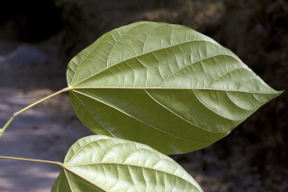
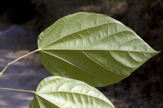

Large deciduous trees, buttressed, up to 30 m tall.
30 ಮೀ. ಎತ್ತರದವರೆಗಿನ ಎಲೆಯುದುರು ಮಾದರಿಯ,ಆನಿಕೆಗಳನ್ನುಳ್ಳ ದೊಡ್ಡ ಮರಗಳು.
Large deciduous trees, buttressed, up to 30 m tall.
பெரிய இலையுதிர் மரம், தாங்கு வேர்களுடையவை (பட்ரஸ்டு), 30 மீ. உயரம் வரை வளரக்கூடியது.
Bark grey, longitudinally arranged lenticels; blaze yellowish cream.
ತೊಗಟೆ ಬೂದು ಬಣ್ಣ ಹೊಂದಿದ್ದು,ಉದ್ದ ಸಾಲಿನಲ್ಲಿ ವ್ಯವಸ್ಥಿತಗೊಂಡ ವಾಯುವಿನಿಮಯ ಬೆಂಡು ರಂಧ್ರಗಳ ಸಮೇತವಿರುತ್ತವೆ;ಕಚ್ಚು ಮಾಡಿದ ಜಾಗ ಹಳದಿ ಮಿಶ್ರಿತ ಕೆನೆ ಬಣ್ಣದಲ್ಲಿರುತ್ತದೆ.
Bark grey, longitudinally arranged lenticels; blaze yellowish cream.
மரத்தின் பட்டை சாம்பல் நிறமானது, நீள்வாக்கில் லெண்டிசெல் அமைந்தவை; உள்பட்டை மஞ்சள்-கீரிம் நிறமானது.
Young branchlets stout, terete, dense golden-brown stellate pubescent, later glabrous.
ಎಳೆಯ ಕಿರುಕೊಂಬೆಗಳು ದೃಢವಾಗಿದ್ದು,ದುಂಡಾಗಿರುತ್ತವೆ, ಚಿನ್ನದ -ಕಂದು ಬಣ್ಣದ ದಟ್ಟವಾದ ನಕ್ಷತ್ರರೂಪದ ರೋಮಗಳಿಂದ ಕೂಡಿದ್ದು,ನಂತರ ರೋಮರಹಿತವಾಗಿರುತ್ತವೆ.
Young branchlets stout, terete, dense golden-brown stellate pubescent, later glabrous.
சிறிய நுனிக்கிளைகள் தடித்தவை, குறுக்குவெட்டுத் தோற்றத்தில் வளையமானது, அடர்த்தியாக பொன்-ப்ரவுன் நிறமான நட்சத்திர வடிவ உரோமங்களுடையது, முதிரும் போது உரோமங்களற்றது.
Leaves simple, alternate, spiral, clutered at twig ends; stipules lateral, caducous and leaving scar; petiole 5-10 cm long, terete, swollen at apex, glabrous; lamina 10-20 (-30) x 7.6-14 (-20) cm, broadly ovate or oblong-ovate, apex acute or slightly acuminate, base cordate or subtruncate, margin entire or slightly undulate, thinly coriaceous, glabrous; midrib raised above; 5-nerved at base; secondary_nerves 3-4 pairs ascending, raised above; tertiary_nerves distantly reticulo-percurrent.
ಎಲೆಗಳು ಸರಳವಾಗಿದ್ದು ಪರ್ಯಾಯ ಮತ್ತು ಸುತ್ತು ಜೋಡನಾ ವ್ಯವಸ್ಥೆಯಲ್ಲಿದ್ದು ಕುಡಿಕೊಂಬೆಗಳ ತುದಿಯಲ್ಲಿ ಗುಂಪಾಗಿರುತ್ತವೆ;ಕಾವಿನೆಲೆಗಳು ಪಾರ್ಶ್ವದಲ್ಲಿದ್ದು, ಉದುರಿದ ನಂತರ ಗುರುತು ಉಳಿಸುವ ಮಾದರಿಯವುಗಳಾಗಿರುತ್ತವೆ; ತೊಟ್ಟುಗಳು 5-10 ಸೆಂ.ಮೀ. ಉದ್ದವಿದ್ದು, ದುಂಡಾಗಿರುತ್ತವೆ,ಮೇಲಿನ ತುದಿಯಲ್ಲಿ ಉಬ್ಬಿಕೊಂಡಿರುತ್ತವೆ; ಪತ್ರಗಳು10–20(-30)X 7.6 – 14(20) ಸೆಂ.ಮೀ. ಗಾತ್ರ, ವಿಶಾಲವಾದ ಅಂಡ ಅಥವಾ ಚತುರಸ್ರ-ಅಂಡದ ಆಕಾರ ಹೊಂದಿದ್ದು,ಚೂಪಾದ ಅಥವಾ ಸ್ವಲ್ಪ ಮಟ್ಟಿಗೆ ಕ್ರಮೇಣ ಚೂಪಾಗುವ ತುದಿ, ಹೃದಯದ ಆಕಾರದ ಅಥವಾ ಉಪ-ಛಿನ್ನಾಗ್ರದ ಮಾದರಿಯ ಬುಡ, ನಯವಾದ ಅಥವಾ ಕೊಂಚ ತರಂಗಿತವಾದ ಅಂಚು ಹೊಂದಿರುತ್ತವೆ,ಪತ್ರದ ಮೇಲ್ಮೈ ತೆಳು ತೊಗಲನ್ನೋಲುವ ಮಾದರಿಯಲ್ಲಿದ್ದು ರೋಮರಹಿತವಾಗಿರುತ್ತವೆ; ಮಧ್ಯನಾಳ ಪತ್ರದ ಮೇಲ್ಭಾಗದಲ್ಲಿ ಮೇಲೆದ್ದಿರುತ್ತದೆ;ಪತ್ರದ ಬುಡದಲ್ಲಿ 5 ನಾಳಗಳಿರುತ್ತವೆ;ಎರಡನೇ ದರ್ಜೆಯ ನಾಳಗಳು 3 - 4 ಜೋಡಿಗಳಿದ್ದು ಆರೋಹಣ ಮಾದರಿಯಲ್ಲಿರುತ್ತವೆ; ಮೂರನೇ ದರ್ಜೆಯ ನಾಳಗಳು ಅಂತರ ಹೊಂದಿದ ಜಾಲಬಂಧ ನಾಳ ವಿನ್ಯಾಸದಲ್ಲಿದ್ದು ಎಲೆಯ ದಿಂಡಿಗೆ ಅಡ್ಡವಾಗಿ ಕೂಡುತ್ತವೆ.
Leaves simple, alternate, spiral, clutered at twig ends; stipules lateral, caducous and leaving scar; petiole 5-10 cm long, terete, swollen at apex, glabrous; lamina 10-20 (-30) x 7.6-14 (-20) cm, broadly ovate or oblong-ovate, apex acute or slightly acuminate, base cordate or subtruncate, margin entire or slightly undulate, thinly coriaceous, glabrous; midrib raised above; 5-nerved at base; secondary_nerves 3-4 pairs ascending, raised above; tertiary_nerves distantly reticulo-percurrent.
இலைகள் தனித்தவை, மாற்றுஅடுக்கமானவை, சுழல் போன்று அமைந்தவை, சிறுகிளைகளின் நுனியில் இலைகள் கூட்டமாக மற்றும் நெருக்கமாக காணப்படும்; இலையடிச்செதில் பக்கவாட்டில் அமைந்தவை, எளிதில் உதிரக்கூடியது மற்றும் தழும்புகளை ஏற்படுத்துகின்றன; இலைக்காம்பு 5-10 செ.மீ. நீளமானது, குறுக்குவெட்டுத் தோற்றத்தில் வளையமானது, காம்பின் நுனிப்பகுதி உப்பியது, உரோமங்களற்றது; இலை அலகு 10-20 (-30) X 7.6-14 (-20) செ.மீ., அகன்ற முட்டை வடிவானது அல்லது நீள்சதுர-முட்டை வடிவானது, அலகின் நுனி கூரியது அல்லது சிறிது அதிக்கூரியது, அலகின் தளம் இதய வடிவானது அல்லது சதுர வடிவானது, அலகின் விளிம்பு முழுமையானது அல்லது சிறிது அலை போன்றது, மெல்லிய கோரியேசியஸ், உரோமங்களற்றது; மையநரம்பு மேற்புறத்தில் அலகின் பரப்பைவிட உயர்ந்து இருக்கும்; தளத்திலே 5 நரம்புகளை உடையது; இரண்டாம் நிலை நரம்புகள் 3-4 ஜோடிகள் நுனி நோக்கி வளைந்தவை, அலகின் பரப்பைவிட உயர்ந்து இருக்கும்; மூன்றாம் நிலை நரம்புகள் அகன்ற வலைப்பின்னல்-பெர்க்கரண்ட் போன்றவை.
Inflorescence short axillary panicle, on old wood, rusty brown tomentose; flowers polygamous.
ಪುಷ್ಪಮಂಜರಿಗಳು ಅಕ್ಷಾಕಂಕುಳಿನಲ್ಲಿನ ಕಿರು ಗಾತ್ರದ ಪುನರಾವೃತ್ತಿಯಾಗಿ ಕವಲೊಡೆಯುವ ಮಾದರಿಯಲ್ಲಿದ್ದು ಹಳೆಯ ಕವಲುಗಳ ಮೇಲೆ ಇರುತ್ತವೆ ಹಾಗೂ ತುಕ್ಕು ಛಾಯೆಯುಳ್ಳ ಕಂದು ಬಣ್ಣದ ದಟ್ಟ ಮೃದುತಪ್ಪಳದಿಂದ ಕೂಡಿರುತ್ತವೆ;ಹೂಗಳು ಸಂಕೀರ್ಣಲಿಂಗಿಗಳು.
Inflorescence short axillary panicle, on old wood, rusty brown tomentose; flowers polygamous.
மஞ்சரி குட்டையானது இலைக்கோணங்களில் காணப்படுபவை பேனிக்கிள் வகை மஞ்சரி, முதிர்ந்த கிளைகளில் அமைந்தவை, துருப்போன்ற ப்ரவுன் நிறமான உரோமங்களுடையது; மலர்கள் பாலிகேமஸ்.
Follicles of 3-5, to 12.5 x 9 cm, globose or ovoid, woody; seeds ca. 30, winged.
ಸೋತ ಫಲಗಳು 3-5, ಇದ್ದು ,12.5 X 9 ಸೆಂ.ಮೀ. ಗಾತ್ರ ಹೊಂದಿದ್ದು,ಗೋಳಾಕಾರ ಅಥವಾ ಅಂಡಾಕಾರದಲ್ಲಿರುತ್ತವೆ ಮತ್ತು ದಾರುವಿನ ಮಾದರಿಯಲ್ಲಿರುತ್ತವೆ; ಬೀಜಗಳ ಸಂಖ್ಯೆ 30 ಇದ್ದು ರೆಕ್ಕೆಯುಕ್ತವಾಗಿರುತ್ತವೆ.
Follicles of 3-5, to 12.5 x 9 cm, globose or ovoid, woody; seeds ca. 30, winged.
பாலிக்கிள் of 3-5, 12.5 X 9 செ.மீ., கோள வடிவமானது அல்லது முட்டை வடிவானது, தடித்தவை; விதைகள் 30, இறகுடையது.


 
